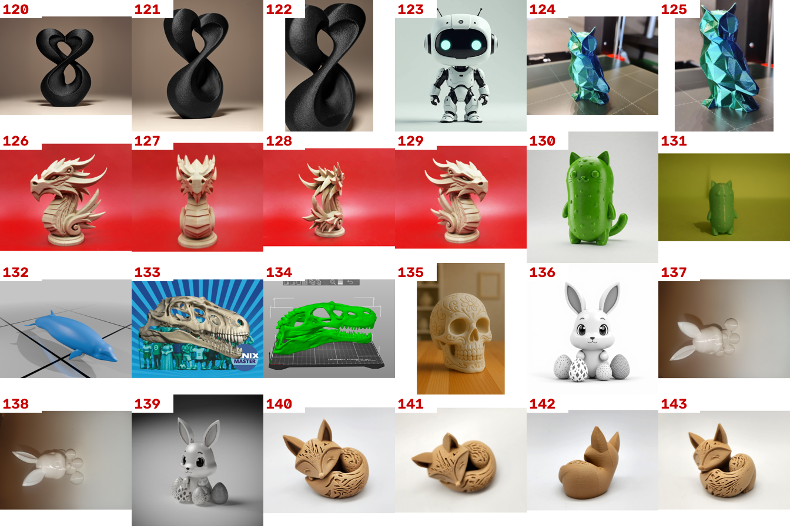
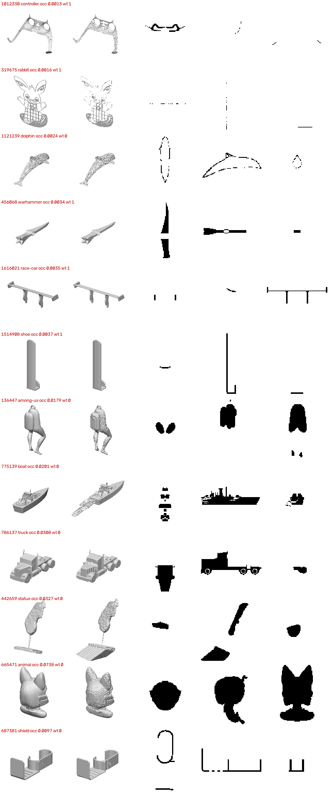
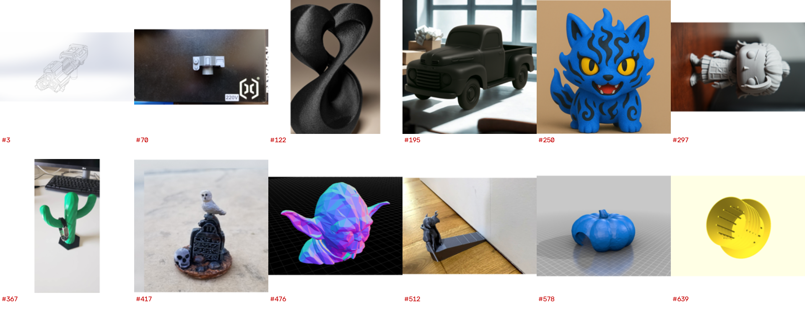

tr208 실물 시험지 얼리기 — 원화CAD짝 시험 나눔(모델 292 · 사진 641) (11-16 · 실물208.py · 손으로 정리)
분석
한 줄로
물음: 실물 사진 · 렌더 · 컨셉아트 같은 「정해지지 않은 입력」에서 앞단을 잴 시험지를, 정답이 맞는지까지 확인해서 얼릴 수 있나?
답: 얼렸다. 사진 641 장에 꼬리표(종류 · 물체 수 · 배경 · 갈래)를 달고, 모델 292 개에서 물체 틀 정답(점유 96³ · 축당 단면 8 장 · 3면도)을 만들었다. 정답이 메시와 맞는지 여섯 방향 실루엣으로 검사해 263 개(사진 583 장)를 「믿음」 으로 표시했다. 정답이 CAD 가 아니라 메시라서 CAD 코드는 여기서 못 잰다.
왜 이 판을 했나
사용자 11-16: 「최대한 모르고 추정하는 문제로」 「실물로 시작해야지 · 상용 모델이고 사용자는 실물이나 컨셉아트」 「원화CAD짝에서 시작」. tr204 까지의 시험은 우리 렌더러 한 가지였다.
바꾼 것 하나
시험지만 새로 얼렸다(모델 · 학습 없음).
- 사진: 원화CAD짝 짝목록의 시험 나눔 그대로(모델184/사진_X.npy 의 641 장).
- 꼬리표: 맥락 없는 검토자가 시트 27 장을 보고 달음. 종류에 「그림 · 일러스트」 칸을 둠(AI 가 만든 듯한 일러스트가 섞여 있음).
- 정답: 메시 → 기준 틀(위축 · 대칭각 · 앞뒤돌림 — 원화짝_기준축 과 같은 식) → 가운데 0 · 최대 길이 1 → 점유 96³(광선 5 개 투표) · 단면 8 장(물체 범위 안) · 3면도 복사. 얼린 곳
D:/datasets/원화CAD짝/시험지_1116/.
결과

| 꼬리표 | 전체 641 | 정답 믿음 583 |
|---|---|---|
| 실물 사진 · 렌더 · CAD·슬라이서 화면 · 그림·일러스트 | 395 · 140 · 92 · 14 | 360 · 130 · 81 · 12 |
| 물체 1 · 여럿 | 558 · 83 | 510 · 73 |
| 배경 단순 · 복잡 | 434 · 207 | 395 · 188 |
| 하드서페이스 · 유기체 · 섞임 | 322 · 245 · 74 | 278 · 232 · 73 |

왜 이렇게 나왔나
확인한 것
- 정답 292 개 모두 만들어짐 · 물 새지 않는 메시 219 개.
- 점검 그림에서 두 실패를 봤다: 얇은 껍질(1012330 · 319675)은 벽이 격자 한 칸(크기의 ~1 %)보다 얇아 점유가 빔, 물 새는 메시(775139 배 · 442659 조각상)는 광선 투표가 틀려 없는 부피가 붙음.
- 믿음 검사(메시와 점유-메시를 같은 틀로 여섯 방향 렌더 · 실루엣 IoU 가장 나쁜 쪽 ≥ 0.9)가 이 넷을 모두 떨어뜨리고, 칼 · 트럭 · 방패 받침 · 어몽어스는 통과시켰다.
- 꼬리표 대조(「확신 낮음」 12 장을 내가 봄): 10 장 같음 · 다름 2(#250 「실물 사진」 → AI 일러스트로 보임 · #195 사진인지 렌더인지 모름).

짐작 (아직 확인 안 함)
- 꼬리표 「확신 낮음」 271 장 중 1~2 할은 종류가 틀렸을 수 있다(실물 사진 ↔ AI 그림 경계).
한계
- 정답이 메시 · 시점은 DINO 로 맞춘 추정값(정답 시점 아님).
- 믿음 검사는 엄격하다: 정답이 멀쩡한 1616021(스포일러)이 얇은 판이 옆으로 보이는 한 방향(0.81) 때문에 떨어짐 — 결과를 보고 문턱을 바꾸지 않았다.
- 라이선스: 원화CAD짝은 비상업(CC BY-NC) 2,957 개가 가장 많다 — 이 시험지는 평가용으로만.
배운 것과 다음
정해지지 않은 실제 입력의 시험지가 생겼다 — 다음은 여기서 지금 무엇이 되는지(바닥)부터.
- 바닥 재기: L1 · S1 · tr184 ⑤ · 검색(가장 닮은 학습 모델) · 평균 모양을 이 시험지에(각자 크기 맞춤 · 24 돌림 최선 · 부피 · 단면 IoU · 꼬리표별 · 겹침 시트 + 도구 대조).
- 그다음 D0 → D1(단면 길).